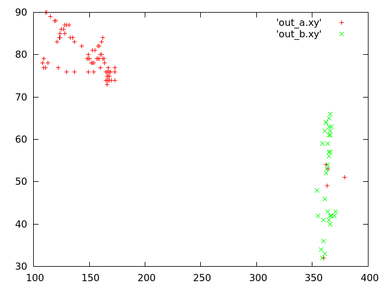
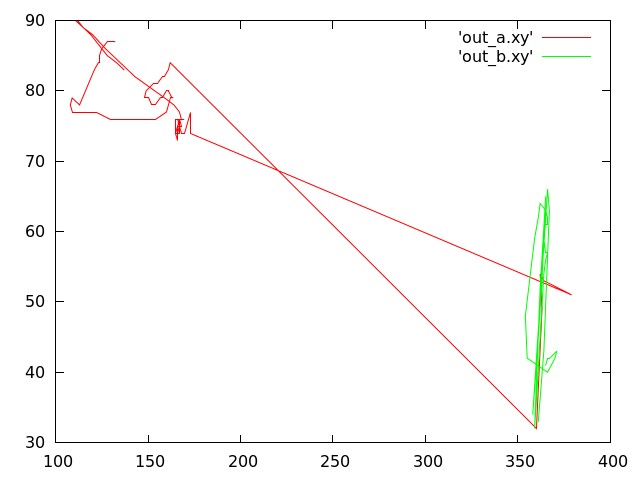
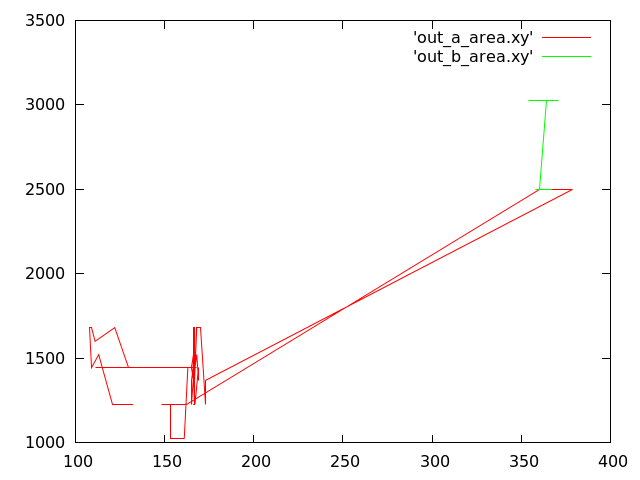
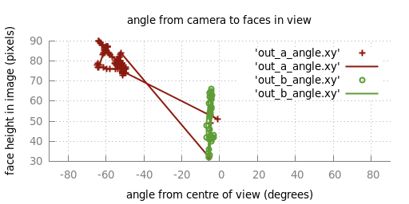

Having a look at building a visualisation using face-tracking data from an omni-directional camera feed. I have this data to go off at ~15FPS at about 20% reliability:
I think I'll start with plotting per-instance with an overhead view of the camera, and work out which angle to the camera each person is at. There is no depth capture, but I have been obsessively playing a u-boot commander game so I very well know how to work out distance using a single 2d frame (arrrr). Then I can plot some 2d x-z positions, and thinking about adding the height as well. Okay, so this gives me a nice 3d scene. That done I can think about analysing some abstract information from the data - head nods and shakes, if a person is talking, if a person has left or a new person has arrived, identifying individuals, etc. I expect the biggest problem will be dead-reckoning to fill the gaps in the input data - it might turn out that making the opencv software more accurate is necessary. But... it will also give me something to play with - perhaps an excuse to build some hardware skinning for animation.
The graphs are some rough data-processing plots with very crude person identification. On the left is x,y position in the image for both people in the scene. At one point they get mixed up, and I wanted to see how big the jump was, so I replotted it as lines to get the sequence of motion. The last plot is the "area" at each x position tracked - which seems to be too big for the faces. I didn't plot any frames where it lost track of the people in view. I think I might keep these frames, replace the gaps with guesses, and show that the guess is losing accuracy over time by making the counter/avatar less opaque.
So, with a little jiggery-pokery I manged to convert the pixel position into a y-axis angle from the camera. I didn't convert the height yet (y-axis here is still pixels, not degrees), but once I do that I can guess the distance from the camera. I might display this in discrete 'near' 'medium' 'far' bands to mitigate the error in this measurement. Don't want the torpedoes to miss.